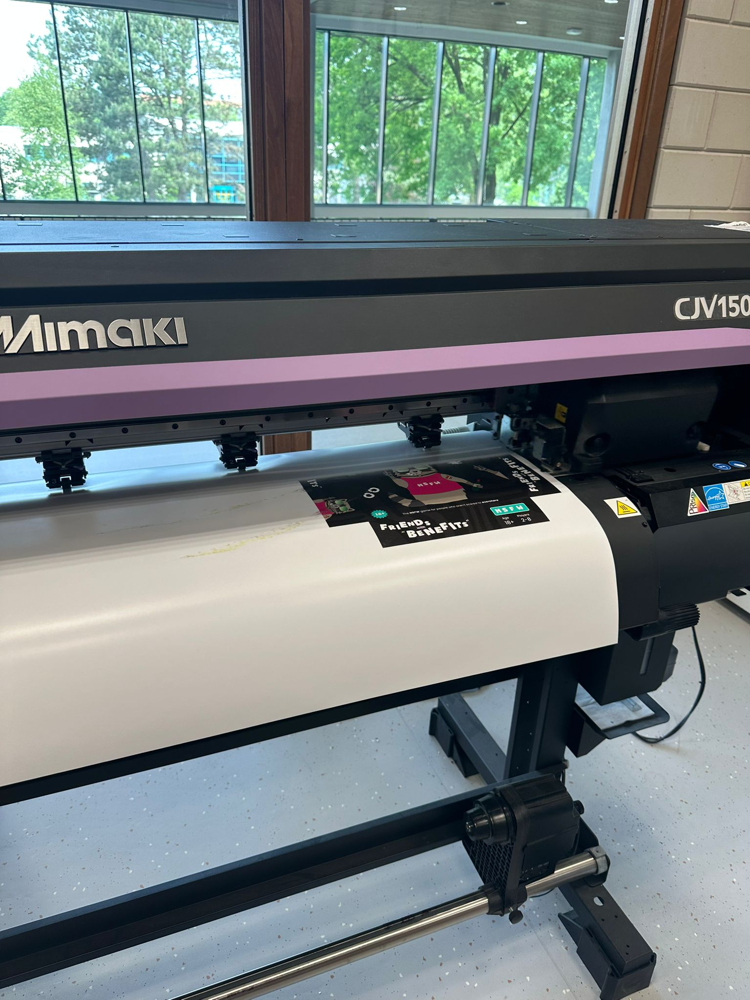
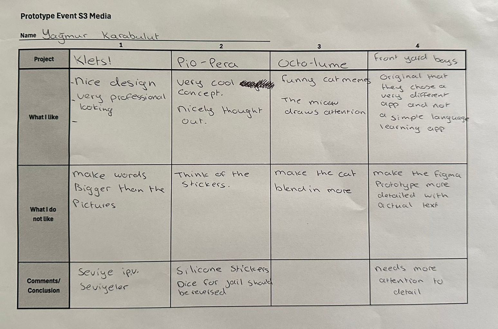

Loop - Media Agency
Animation
I had previously made some simple animations with procreate. That is how I already knew the basics. However, I had never used Adobe Animate, that is why I watched a tutorial first.
Feedback
I am always open to feedback. When my teammate gave me the feedback to use more yellow, I immediately took action.
Friends with "Benefits"
Printing
We wanted to print out stickers to stick on paper cups to use like shot glasses for the showcase event. I made the design but couldn’t figure out how to make it cut. After a lot of trial and error, my team mate found the issue. It turns out the program is capital sensitive. So everything just had be named properly in order to make it all work. But even if it hadn’t worked, I had already came up with different solutions. I started hand cutting all the stickers so we at least had something to show. We wanted to make a sturdy box, but we did not have enough cardboard in stock, that is why we resorted with a thick paper. I stuck the sticker on the paper and glued another layer of paper to make it even firmer. We left the board as it is on the sticker paper, even though we couldn’t fold it this way, it looked better for the showcase.
My share
I think I am allowed to be very proud with this project because of my share in this group. I came up with the original ranking idea, I made the whole first design, I helped create a marketing strategy with Rick, I was very engaged in making the paper prototypes and during the showcase I was really selling the product. One of the teachers even said I sound like a real sales lady. Everyone who came by said that they would buy the game if it ever came out.
Taking action
I am still very open to feedback, when I got told my design was too minimalistic I immediately took action. When the stakeholder did not like our concept I went onto looking for a new idea. After the workshop about user stories I immediately created our user stories and assigned to people in Trello. All in all I am very pleased with the way I provided my work.

Work
Because we divide the tasks within our group, everyone knows what they have to do. Because of this we tend to work from home quite often. But I realized this does now work for me. When I stay home, I stay in bed or do other things. That is why I choose to go to school and work in a study pod. Being at school keeps me away from distractions. Waking up early and getting all dressed and dolled up helps me stay motivated for school, instead of being in my pajama’s at home.
Showcase
During the showcase event I went around and looked at all the other projects. During all of the other presentations I already thought we were ahead of the rest. Within our group we wanted to be finished 4/5 weeks prior to the end of the semester so we had time for the passion project. I realized that none of the other groups did that. For example, the other boardgame group. They do not have any kind of design for the packaging, they still have to do a lot of testing to improve and more. This also goes for other groups. I get that it is harder for them because their stakeholders are far away. I wrote down tips and tops for four of the projects I visited. Most groups are still in the prototype phase and have not started developing yet.
